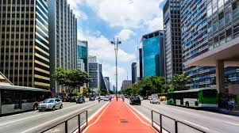

O que eu mais gosto em Sao Paulo
Passear na Avenida Paulista
Um dos principais centros financeiros da cidade, a avenida paulista támbem possui diversas opcoes de entretenimento. Endereco do museu de Arte de Sao Paulo, MASP , do teatro gazeta e muitos outros, a regiao e de facil acesso gracas as diversas linhas de onibus que cruzam a avenida e a linha de metro que passa por de baixo dela.
A Avenida Paulista sempre é assunto, O que será que estao falando a respeito no twiter?
Os bares da Vila Madalena

Depois de um dia de trabalho, nada melhor do que um bom chopp, um petisco e uma conserva em uma mesa de bar. Opcoes dee sobra na regiao das rua Aspicuelta, Fradique Coutinho e Wizard.
Veja quais os melhores bares e restaurante da regiao no guia da Veja de Sao Paulo.
O Parque do Ibirapuera

Um dos cartoes postais da cidade, o parque dispoe de mais de 1,5 km{^2} de área verde, lagos artificias e pistas de cooper e ciclismo. E se isso nao fosse o suficiente, o parque costuma ser palco de diversos eventos culturais ao longo do ano.
Veja no mapa como chegar ao parque.